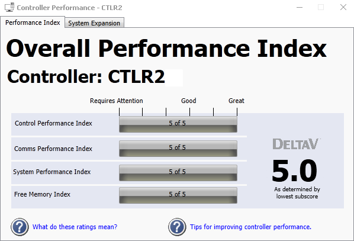

Monitor MQ, MX, PK , SX, SQ, or SZ controller or Ethernet I/O card performance

MQ, MX, SX, SQ, PK and SZ controller and EIOC resources are partitioned and allocated for control and communication. The Controller Performance dialog shows a graphical representation of the controller's runtime performance based on an indexed value from 1 to 5. Specifically, the meaning of each index value is:
| Index | Performance indicated |
|---|---|
| 1 | An overloaded condition |
| 2 | A heavily loaded but supported condition |
| 3 or 4 | A moderately loaded and supported condition |
| 5 | A lightly loaded and supported condition |
The gray bar for each of the following performance indices turns progressively more purple in color if performance heads in the direction of the "Requires Attention" value of 1:
- Control Performance Index (CONTROL_INDEX) is an indicator of controller module execution. Included in this metric is the amount of CPU time spent executing control for the high, medium, and low priority modules.
- Comms Performance Index (COMMS_INDEX) is an indicator of the data that is transmitted and received by the controller. This metric takes into account bandwidth comparisons in terms of the average amount of data sent and received as compared to the maximum bandwidth that is supported for the controller, solicited and unsolicited data transfers, the amount of Remote I/O data sent and received, and the depth of the communications queue.
- System Performance Index (SYSTEM_INDEX) is an all inclusive indicator of the controller processor's total free time.
- Free Memory Index (FREMEM_INDEX) is an all inclusive indicator of the controller's free memory.
In addition, the Overall Performance Index, located on the right, compares the smallest value of the Control Performance Index, the Comms Performance Index, and the System Performance Index. The Overall Performance Index listed is always equal to the controller's Perf_Index diagnostic parameter.